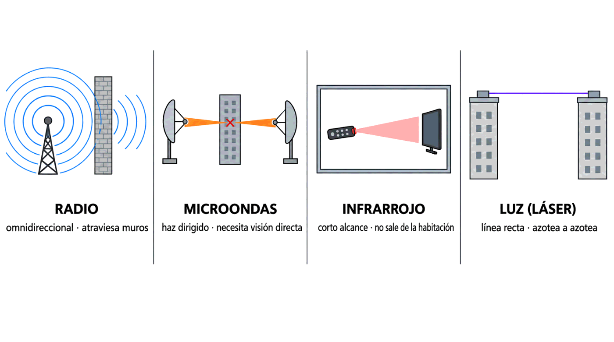

Contenido del día
1. Ondas infrarrojas
Las ondas infrarrojas y milimétricas se usan mucho para la comunicación de corto alcance: los mandos a distancia de televisores, grabadoras de vídeo y equipos de música, y en su día el puerto de infrarrojos de los portátiles.
| Característica | Consecuencia |
|---|---|
| Son relativamente direccionales | Hay que apuntar, aunque no con precisión milimétrica |
| Son baratos y fáciles de construir | Por eso están en cualquier mando de cinco euros |
| No atraviesan los objetos sólidos | Es su gran inconveniente… y su gran ventaja |
| No necesitan licencia | No hay que pedir permiso a ningún gobierno para operarlos |
| No sirven en exteriores | El Sol emite gran cantidad de infrarrojos y perturba la señal |
Que la comunicación no atraviese las paredes de un edificio parece una limitación, y el libro señala que a veces resulta una ventaja: ofrece más seguridad. Lo que no sale de la habitación no lo puede escuchar nadie desde fuera.
Compáralo con lo del lunes: en Wi-Fi hay que cifrar porque cualquiera dentro del alcance recibe la señal. En infrarrojos, el alcance termina en la pared.
2. Ondas de luz
Subiendo un poco más en frecuencia se llega a la luz. Las ondas de luz permiten comunicar zonas distintas siempre que exista visión directa entre ellas, porque se transmiten en línea recta y no atraviesan los objetos.
La señal más utilizada es el láser, porque el haz se mantiene enfocado en un punto muy estrecho a lo largo de su trayecto. Un uso típico: unir dos edificios enfrentados, colocando el equipo en las azoteas.
La señalización óptica mediante láser es unidireccional, de modo que cada edificio necesita un emisor láser y un receptor. Es la misma idea que viste en la fibra: un solo haz va en un solo sentido, así que para conversar hacen falta dos.
| A favor | En contra |
|---|---|
| Coste muy bajo | Es difícil colocar correctamente emisores y receptores |
| Fácil de instalar | El rayo se interfiere con facilidad |
| Velocidad de transmisión elevada | Lo estropean la lluvia, la niebla densa y las corrientes de convección |
3. Los cuatro medios no guiados, cara a cara
| Radio | Microondas | Infrarrojo | Luz (láser) | |
|---|---|---|---|---|
| Direccionalidad | Ninguna: omnidireccional | Alta: haz enfocable | Media: hay que apuntar | Máxima: un punto |
| ¿Atraviesa obstáculos? | Sí, incluidos edificios | No | No | No |
| Alcance típico | De kilómetros a miles | Decenas de km por salto | Metros | Cientos de metros |
| Velocidad (tabla 3.5) | 1 Mbps | 10 Mbps | 10 Mbps | 1 Mbps |
| Licencia | Sí en largas distancias | Según banda | No | No |
| Su peor enemigo | Otras emisiones | Obstáculos y lluvia | El Sol | Niebla y convección |
| Seguridad | La peor: se oye desde lejos | Buena: haz estrecho | Muy buena: no sale de la sala | Muy buena |

RADIO MICROONDAS INFRARROJO LUZ / LÁSER
((( ● ))) ▐▶────────▶ ●··▷ ▭ ●───────────▶
cruza muros haz, sin muros dentro de azotea a azotea
la habitación4. La tabla completa: siete medios
Ya puedes leer entera la tabla 3.5 del libro, la misma que la semana pasada quedó a medias:
| Medio | Velocidad máxima | Distancia entre repetidores | Tipo |
|---|---|---|---|
| Par trenzado | 1 Gbps | 2-10 km | Guiado |
| Coaxial | 2 Gbps | 10-100 km | |
| Fibra óptica | más de 10 Gbps | más de 100 km | |
| Ondas de radio | 1 Mbps | 100-1 000 km | No guiado |
| Microondas | 10 Mbps | 80 km | |
| Infrarrojo | 10 Mbps | 200 m | |
| Ondas de luz | 1 Mbps | 1 km |
- Los guiados ganan en velocidad por goleada: el peor de ellos, el par trenzado, va cien veces más rápido que el mejor de los no guiados.
- Los no guiados ganan en distancia cuando se trata de radio: 1 000 km sin tender nada por el camino es algo que ningún cable puede ofrecer.
- El infrarrojo es el más limitado en distancia de los siete: 200 m, menos que dos tramos de par trenzado.
5. Cable o aire: el método ampliado
La semana pasada terminaste con cinco preguntas para elegir medio. Siguen valiendo, pero ahora hay que insertar dos preguntas nuevas que solo tienen sentido con el aire de por medio:
| # | Pregunta | Qué decide |
|---|---|---|
| 1 | ¿Qué distancia hay? | Por encima de 100 m se cae el par trenzado |
| 2 | ¿Se puede tender cable? ¿Hay obra posible, permiso, propiedad? | Si no se puede, el aire pasa de opción a única salida |
| 3 | ¿Hay visión directa? ¿Y la habrá dentro de dos años? | Sin ella caen microondas, infrarrojos y láser; queda la radio |
| 4 | ¿Cómo es el entorno? Interferencias, meteorología, otros emisores | Afina entre las opciones que quedan |
| 5 | ¿Qué velocidad hace falta, hoy y en diez años? | Dimensiona |
| 6 | ¿Cuánto cuesta en total? | Aquí el aire suele ganar: no hay obra |
| 7 | ¿Quién lo va a mantener? | Un radioenlace hay que realinearlo; un cable enterrado se olvida |
Con las mismas condiciones, gana el cable: más velocidad, más estable, sin meteorología, sin vecinos y sin licencias. El aire gana cuando el cable no puede estar: porque no se puede tender, porque el destino se mueve o porque hace falta ya.
Y hay un matiz de seguridad que conviene no olvidar: en el aire cualquiera dentro del alcance recibe la señal. Eso no descarta lo inalámbrico, pero obliga a cifrar siempre.
6. Cinco casos comentados
| Escenario | Decisión | Por qué |
|---|---|---|
| Puestos fijos de una oficina, 30 m | Cable, par trenzado | Se puede tender, es más rápido y más estable. El Wi-Fi, como complemento para los portátiles |
| Dos naves separadas por una carretera pública | Radioenlace de microondas | No se puede canalizar y hay visión directa. Es el caso clásico del aire |
| Almacén con carretillas y lectores de códigos | Wi-Fi, con varios puntos de acceso cableados | Los equipos se mueven: no hay cable posible. El cable va a los puntos de acceso |
| Edificio protegido donde no se pueden hacer rozas | Wi-Fi o radioenlace entre plantas | La pregunta 2 decide: no se puede tender cable, y no por dinero |
| Sala de reuniones donde se tratan datos sensibles | Cable, y punto de acceso apagado | Lo que se emite por el aire sale del edificio. Aquí el infrarrojo, que no sale de la sala, era la vieja solución |
7. Resumen y errores frecuentes
- Infrarrojos: corto alcance, direccionales, baratos, sin licencia, no atraviesan sólidos —lo que da seguridad— y no sirven en exteriores por la radiación del Sol.
- Ondas de luz: láser, visión directa, unidireccional —hace falta emisor y receptor en cada extremo—, coste bajo y alta velocidad.
- Al láser lo estropean la lluvia, la niebla densa y las corrientes de convección.
- Tabla 3.5: radio 1 Mbps y 100-1 000 km · microondas 10 Mbps y 80 km · infrarrojo 10 Mbps y 200 m · luz 1 Mbps y 1 km.
- Los medios guiados ganan en velocidad; los no guiados, en distancia y en flexibilidad.
- Dos preguntas nuevas al decidir: ¿se puede tender cable? y ¿hay visión directa?
- A igualdad de condiciones gana el cable. El aire gana cuando el cable no puede estar.
| Se dice… | …pero en realidad |
|---|---|
| «El infrarrojo no vale para nada por no atravesar paredes» | Eso mismo le da seguridad: la señal no sale de la habitación |
| «Un enlace láser falla con mal tiempo» | También con buen tiempo: las corrientes de convección del aire caliente desvían el rayo |
| «Con un láser en un edificio basta» | Es unidireccional: hace falta emisor y receptor en cada extremo |
| «Los infrarrojos funcionan mejor al aire libre» | Justo al revés: el Sol emite infrarrojos y tapa la señal |
| «Lo inalámbrico es más rápido, que es lo moderno» | En la tabla 3.5, el peor medio guiado supera cien veces al mejor no guiado |
| «Si hay Wi-Fi, no hace falta cablear» | Los puntos de acceso se conectan por cable. Lo inalámbrico es el último tramo, no toda la red |
| «Elijo aire porque es más barato» | Es más barato de instalar; después hay que mantenerlo, realinearlo y convivir con los vecinos |
8. Repaso con flashcards
Piensa la respuesta antes de girar la tarjeta.
Quiz del día
14 preguntas · 20 minutos · Contesta sin volver a la teoría
El cronómetro no corre mientras lees: arranca al llegar aquí, al pulsar «Empezar quiz» o al marcar tu primera respuesta.
Resultados
Respuestas correctas: 0 / 0
Respuestas incorrectas: 0
Seis escenarios y una sola pregunta para cada uno: cable o aire. Después, un caso completo con presupuesto y plazos donde hay que comparar radioenlace y fibra. Y un experimento de dos minutos para ver la luz infrarroja de un mando a distancia.
→ Ir al laboratorio del Día 4 (60 min)
Síntesis y test semanal: los cuatro días en una página, mazo completo de flashcards y test de 24 preguntas con desglose por día y hoja de recuperación.